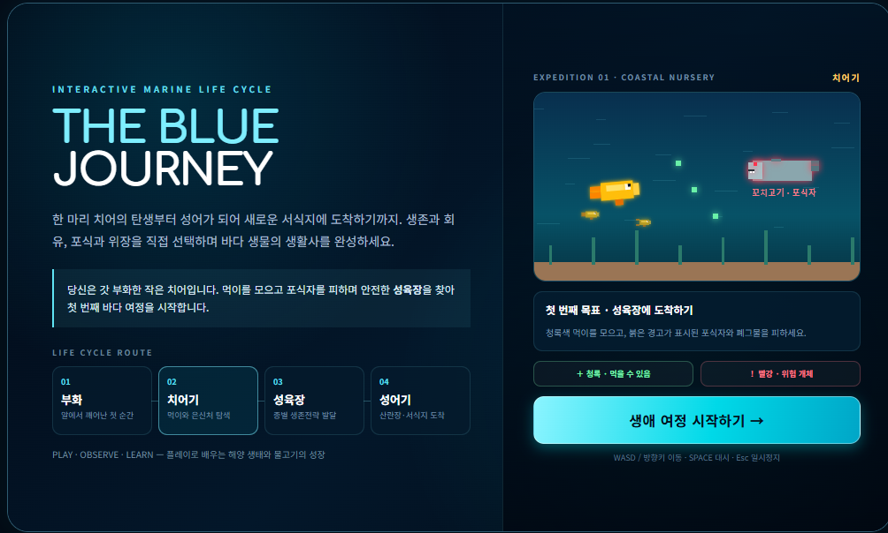
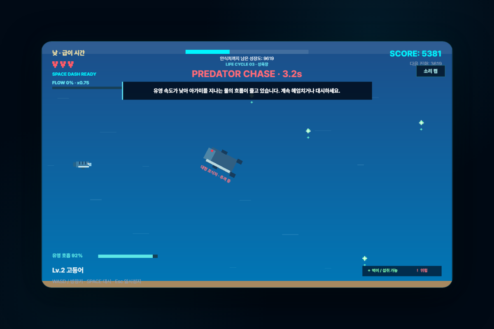
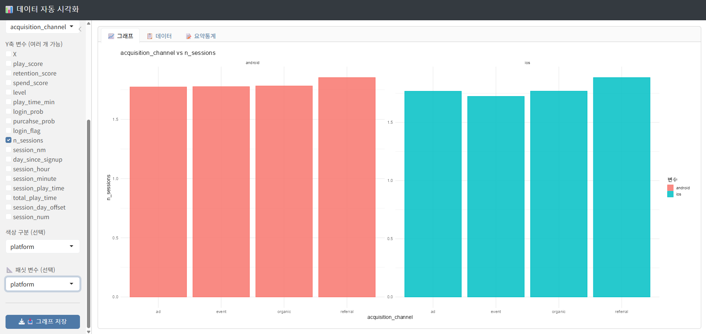
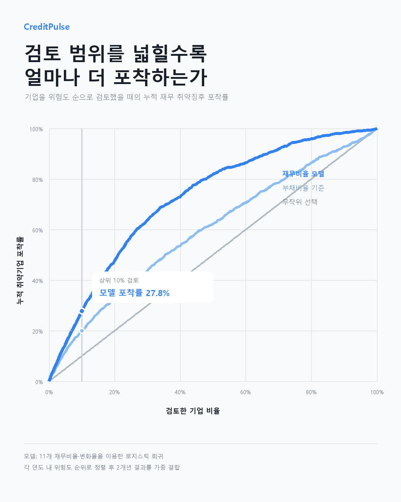

AI GAME MAKER · PORTFOLIO
문제를 정의하고,
플레이 가능한 게임으로
끝까지 완성합니다.
게임의 재미가 부족한 이유를 관찰하고, AI와 협업해 기능을 구현한 뒤 실제 플레이로 다시 검증합니다. 기획과 개발의 경계를 넘나드는 윤정현입니다.

FEATURED PROJECTThe Blue Journey
01 · FEATURED PROJECT
치어에서 번식까지,
해양 생태를 직접 플레이하다.
The Blue Journey는 생애주기와 생존 전략을 조작과 선택으로 경험하는 2D 해양 생태 교육 게임입니다.
직접 조작하는 경험으로 전환
UI/UX · 사운드 · QA 주도
완성도 검수 · 피드백
실제 Chrome 플레이 QA
GAME DESIGN
생태 정보가
게임 규칙이 되도록.
부화부터 산란까지의 성장 단계를 플레이 목표로 바꾸고, 어종별 생태 차이를 속도·호흡·야간 행동 규칙에 반영했습니다.
01부화알에서 깨어나는 시작
02자어기먹이 탐색과 위험 학습
03성육장종과 개체군 전략 선택
04성어기서식지 도착과 생존
05산란번식으로 생애주기 완성

02 · PROBLEM SOLVING
기능이 아니라
문제에서 출발했습니다.
관찰 → 판단 → 구현 → 검증을 반복하며 플레이할 이유를 만들었습니다.
실패 위험이 없어
긴장감이 약하다
판단 회피와 생존을 판단할 자원이 필요했습니다.
구현 LIFE, 피격, 회복, 실패 조건을 추가했습니다.
위험 요소가 실제 선택으로 변화반복 구간이
같은 패턴으로 흐른다
판단 예고된 돌발 상황이 흐름을 깨야 했습니다.
구현 경고·추격·결과로 이어지는 포식자 이벤트를 설계했습니다.
수동 회피가 능동 생존 플레이로 변화엔딩 후 다시
플레이할 이유가 없다
판단 학습 기록을 수집 목표로 바꾸기로 했습니다.
구현 개체군 선택, 관찰 도감, 로컬 저장을 연결했습니다.
다른 선택으로 기록을 채우는 반복 루프


03 · AI COLLABORATION
AI가 답을 정하지 않도록,
문제와 완료 조건을 통제했습니다.
제가 맡은 일
- 플레이에서 부족한 재미 정의
- 생태 정확성과 게임성의 우선순위 결정
- 충돌 범위와 피드백의 완료 기준 설정
- 코드와 화면 검토 후 채택 여부 판단
- 실제 입력으로 플레이 QA
AI에게 맡긴 일
- 구현 방법과 코드 초안 탐색
- 버그 원인 후보와 수정 범위 정리
- Phaser 구조화와 리팩터링 제안
- 검증 체크리스트와 테스트 후보 생성
- 반복 수정의 작업 속도 보조
문제 정의 제약 구조화 AI 구현 후보 코드·화면 검토 플레이 QA
04 · ENGINEERING & QA
새 도구를 배우고,
검증 가능한 구조로 옮겼습니다.
HTML 프로토타입을 Phaser와 TypeScript 구조로 이식하고 Scene, Data, System, Config의 변경 범위를 분리했습니다.
Phaser 4.2.1TypeScript 6ViteFrame-independent movementLocalStorageResponsive UI
05 · OTHER WORK
게임 밖에서도
문제를 도구로 바꿉니다.


DATA ANALYSIS
CreditPulse
공개 재무지표로 제한된 검토 자원을 어디에 먼저 투입할지 구조화했습니다.
Case studyLET'S BUILD THE NEXT PLAY
피드백을 다음 플레이 규칙으로 바꾸는
AI Game Maker가 되겠습니다.
윤정현 · Game Design / Development / QA